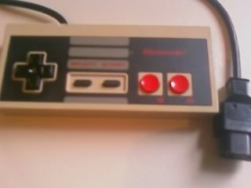
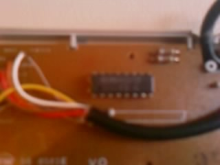
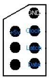
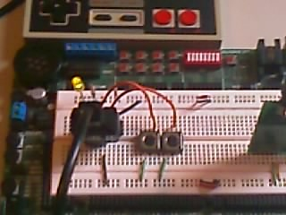
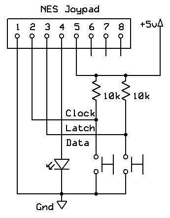
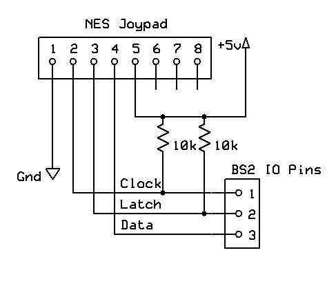
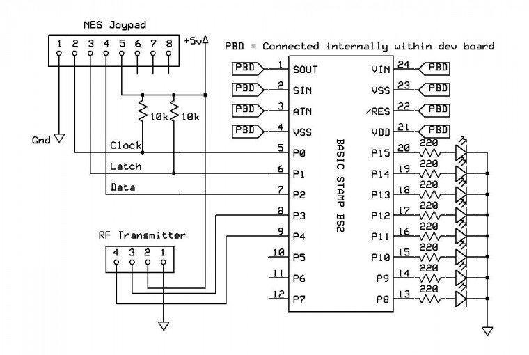
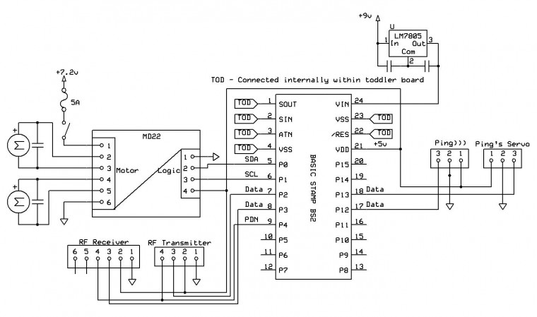

John - Meeting Nintendo!
I had today off work so I thought I'd work on something for John which doesn't require drastic hardware changes (ie trying to mount sensors near the front of the tracks) so I have decided to pursue some remote control for John using an ancient NES pad:

This kind of pulls away somewhat from full robotics, whereby the robot does everything on its own with no human input. This will be fun however, and I might learn something - sounds good to me. The first steps I took were to establish how the NES pad works exactly. I already know a bit about this from where I was going to use the pad for another project ages ago. Anyways just for fun I took the pad apart, to be presented with just one IC! (gone are the days of simple electronics eh)

A rubbish picture I know, that's what you get for using a phone as a camera. Anyway that single IC is a 4021 shift register, a common device that takes parallel inputs and then can be commanded to shift each value out serially. This has a huge benefit, as in order to monitor 8 inputs (the NES has 8 buttons, A, B, Start, Select, Up, Down, Left Right) it would take a whopping 8 IO lines! The shift register effectively cuts this down to just three IO lines to be able to monitor all eight buttons. The downside is that it's relatively slow in the electronics world, but it's easily fast enough for occasional polling.
In order to operate the register, you must of course provide it power and ground from the logic supply, and then you should be concerned with three pins, LATCH, CLOCK and DATA. Basically the DATA line will contain 0 or 1 that indicates the state of the current button (where LOW indicates button pressed). In order to cycle through the buttons, the LATCH line must be held low, and then each successive HIGH pulse on the CLOCK line will shift the next bit out onto the DATA line. Once this is repeated 7 times (DATA always holds the first value - the first CLOCK moves onto bit 2) LATCH is set HIGH again and the chip resets back to bit 0 on the DATA line again. As I said above the controller has 8 buttons which is perfect for a shift register as it the total button state can be represented in exactly a byte.
In order to verify this behaviour I setup a test circuit to work out which button appears at which point in the shift sequence. Thankfully I have a diagram that shows how the pins on the controller connector are mapped to the IC:

With that I knocked up a simple circuit that can be used to poll the state of the buttons. For this I have a LED on the DATA line to show the output, and the CLOCK and LATCH lines are hooked to ground through a push button. The resistors on these two lines are known as pull-up resistors, they basically always ensure that the line


is HIGH by default and prevents any noise or "floating" inputs. When a button is pressed the line is pulled to LOW.
Now, bearing in mind that the DATA line will always show the output of bit 0 even when the latch is HIGH, I quickly determined that bit 0 was button A, as pressing A made the LED switch off. Now, whilst holding the LATCH button, pressing the CLOCK button cycled through the button states. I held down the different buttons on the pad and cycled through to establish the buttons states were in the following order:
0 - A
1 - B
2 - Select
3 - Start
4 - Up
5 - Down
6 - Left
7 - Right
Nice! Phase two was to attempt to read this data in from the micro-controller (a basic STAMP 2). I modified the circuit so the DATA, LATCH and CLOCK lines were hooked up to BS2 instead of buttons / a LED.

The BS2 already has a nice function to read serial data in from external devices called SHIFTIN. This asks for a data and clock pin, and a variable with which to read the data into. Therefore the only thing I need to worry about is controlling the LATCH line which is very straightforward. I used the following simple program to read the button states in and display them in the debug terminal. Note that all inputs are HIGH by default and LOW when a button is pressed - this logic is a bit backward when coding so I XOR the result with 11111111 to produce a byte where a bit value of 1 means that button is pressed.
' {$STAMP BS2}
' {$PBASIC 2.5}
DAT PIN 3
CLOCK PIN 1
LATCH PIN 2
joyinput VAR Byte
Main:
'Attempt to r
ead the contents on the shift register in
LOW LATCH
SHIFTIN DAT, CLOCK, MSBPRE, [joyinput]
HIGH LATCH
'XOR the output to invert the bits
joyinput = joyinput ^ %11111111
'Show results
DEBUG BIN8 joyinput
PAUSE 100
GOTO Main
This worked very nicely, an example of output when button A and up are pressed is 10001000 as expected. I will be using the RF transmitter / receiver mentioned in a previous post to transmit this data to John for processing. Ideally I think I would have the NES circuit work out which direction to go and then send a nibble with a value in it indicating what's going on. This way it halves the amount of data being sent and eases up on some of the processing for John. For this test however I will just send the whole byte and have John do the processing.
What I want is for up / down to go forward and backward, left / right pivot left and right, and diagonal up/right up/left to turn right/left respectively. I'm not going to bother with backwards movement and turning for now. Button A will increase John's speed through Cautious, Cruise and Max, whilst button B does the reverse, and steps back through the speeds. Sending no movement commands will cause the movement to stop. For this to work properly certain states need a higher precedence, ie diagonally up/right should be checked before right on its own or up on its own, and if found then the others should not be checked. The other concern is that of the buttons - I'm sending radio pulses every 100ms, and when I press the button I want it to fire once and only once until I have let go of the button and pressed it again. One final precaution is to prevent any noise or rubbish data from suddenly making John do stuff I didn't ask - this is easily implemented by requiring two identical bytes to be recieved in sucession before acting on them.
All being said and done I now have a new version John's program that accepts a RF signal, then uses some bit masking to determine what the command was, which is then executed. I have also now added the output from the NES controller to be displayed across 8 of the LEDs in the development board. This is because the connection from the NES plug to the board is not very good (a few bits of wire), and can need some wiggling about when moved to get working properly. The LEDs act as real time debugging so I can see the circuit is working as it should be whilst away from the PC.
Full schematics for John as it stands, and the NES controller:

NES

John
I will post a video at some point. Happy to report John is working remotely via the NES pad - very cool! A nice use for a poor pad that thought it would never be used again -worth the £1.50 it cost me from Gamestation :)